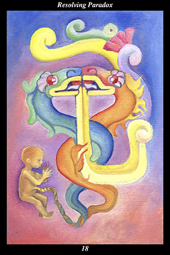

 | IMAGE Two intertwining serpents, one of water and one of fire, unite. Their tails braid into a rope that forms the umbilical cord of a gestating infant. From their union there also comes a bifurcated tongue that forms a single speech glyph representing a flower and song of jade. |
INTERPRETATION
This hexagram depicts the creative power that is released by the marriage of opposites. The intertwining serpents symbolize the duality of the two great creative forces of the universe, whose union forms the mystery that is the core of every individual creation. The tail symbolizes that which follows, or results from, something. The rope symbolizes that which ties together or which provides continuity. The umbilical cord symbolizes hidden nourishment or an invisible wellspring. The gestating infant symbolizes both the impending birth of something new and the loving care it requires if it is to develop fully. Taken together, they mean that you protect a new creation whose connection with the unseen forces provides continuity between the past and the future. The bifurcated tongue symbolizes that which appears to be two but is in reality one. The single speech glyph of a jade flower and song symbolizes the single voice of philosophy, art, wisdom, and compassion with which the great duality speaks. Taken together, they mean that your thoughts, words, and actions increasingly give expression to the bittersweet experience of being born into a perfect world which you must inevitably leave.
ACTION
The masculine and feminine halves of the spirit warrior are but one aspect of the universal duality making up the unitary nature of the world. Most of our preventable difficulties in life arise from a failure to integrate our own personal halves with their universal counterparts, symbolized by fire and water. Preventing such difficulties from arising, therefore, is a matter of internal action: aligning the masculine half of the spirit warrior with the beneficial direct action of universal fire and the feminine half of the spirit warrior with the beneficial flexible nurturing of universal water, we find the rhythm of the life-giving and life-sustaining forces and move with them effortlessly through the world of change. In this way, we recognize that the masculine half of the spirit warrior is not aligned properly when we experience frustration and aggressiveness—and that it is brought back into alignment by reverting to the beneficial flexible nurturing of universal water. Likewise, we recognize that the feminine half of the spirit warrior is not aligned properly when we experience apathy and desperation—and that it is brought back into alignment by reverting to the purposeful direct action of universal fire. Using the irrational forces to refine and cultivate the rational forces in this way is like gestating an immortal child in the womb of your spirit.
INTENT
When two opposing needs, such as the need for security and the need for freedom, are equally strong at the same time, conflicts arise that are too often resolved by sacrificing one of the needs. Such solutions do not work and, eventually, prove harmful. Placing the need for security above the need for freedom, for example, does not simply create a prison—eventually, it makes its prisoners more insecure than ever. Likewise, placing the need for freedom above the need for security does not simply create vulnerability—eventually, it makes its homeless more dependent than ever. Paradoxes cannot be resolved by choosing one need, belief, value, desire, or ideology over its opposite. On the contrary, such paired opposites are in reality complements to one another: they mutually fulfill each other’s lack, together making a whole whose unity they serve. Aligning the need for security with universal fire and the need for freedom with universal water, for example, demonstrates that an over-zealous pursuit of security leads to aggressiveness and an over-zealous pursuit of freedom leads to apathy. This aggressiveness is an illness of over-zealous fire that its complement, beneficial flexible nurturing, remedies. Likewise, this apathy is an illness of over-zealous water and what its complement, purposeful direct action, remedies. Using the rational forces to balance and harmonize the irrational forces in this way is like a sacred marriage of two perfectly matched halves of an unimaginable whole.
SUMMARY
Two equally strong needs appear to oppose one another, tempting you to choose one over the other. This is not the time for a decision—wait instead for an opportunity that allows you to join these needs into a third, more comprehensive, goal. Continually balance each negative extreme with its positive opposite and frustration will give way to greater insights and creativity. Seek out new experiences that evoke unexpected and unfamiliar feelings and ideas. Remain unnerved by change.
THE LINE CHANGES
1° When paradox is the rule, people often find themselves quarreling over the dividing of the spoils before the last battle is fought. Such disunity and flagrant self-interest bode ill—establish a unity of purpose and sense of self-sacrifice now or find new allies. The first step augurs the last.
2° When paradox is the rule, you must rely on your partners and not doubt their motives or capabilities. Likewise, do not make your allies doubt your own sincerity or confidence—you must all pull together with a single will. Great rewards await the stout of heart and stalwart companions.
3° When paradox is the rule, people often find themselves trying to rush ahead without first completing the task at hand. Such amateurishness and flagrant impropriety bode ill—establish a method of review and evaluation now or accept defeat. The old ways cannot lead to the new way.
4° When paradox is the rule, you must accept challenging tasks and strive tenaciously until they are completed. You may not feel prepared but trust that you will rise to the occasion—you do not know your potential until you have the chance to exercise it. This is the road of the ecstatic life.
5° When paradox is the rule, people often find themselves depending on supporters who are stronger and more experienced than they. This bodes ill if you are not of the same mind—establish a way for advice to be rendered without confusing your respective roles. Do not grow apart.
6° When paradox is the rule, you must be able to remain calm in the midst of activity and sober in the midst of excitement. Do not get carried away by the celebratory atmosphere—reaching the further shore is just the first step of a new journey. It is pleasant to rejoice—now, back to work.